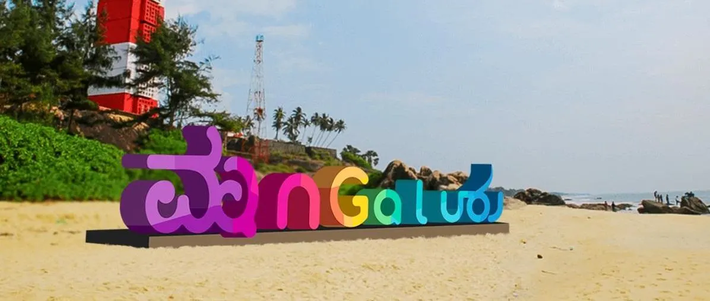
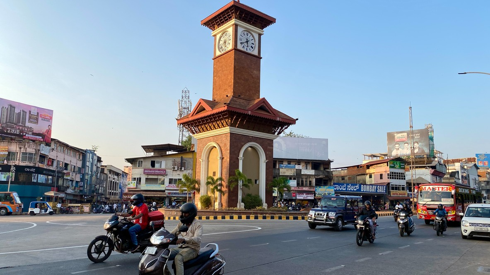
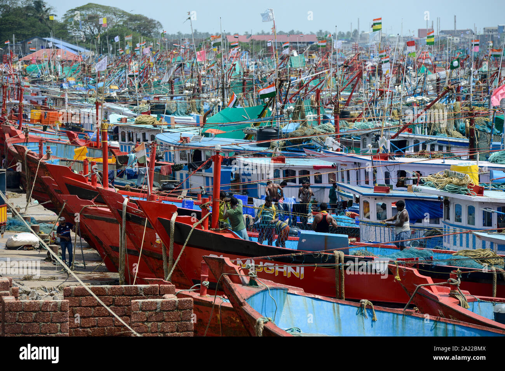

Welcome to Kudla
Kudla (Mangalore) is a coastal paradise known for beaches, temples,
seafood, culture and peaceful lifestyle. This website gives complete
travel details to explore the beauty of Kudla.
Food Specialities
🍛 Neer Dose
Soft rice dosa served with coconut chutney.
🍤 Fish Fry
Traditional Mangalorean-style spicy fish fry.
🍗 Chicken Ghee Roast
Signature dish made with Kundapur masala.